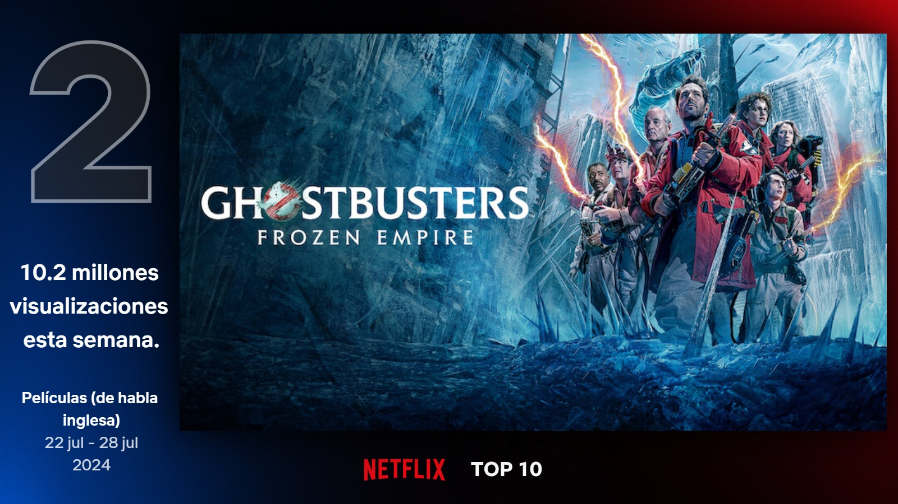
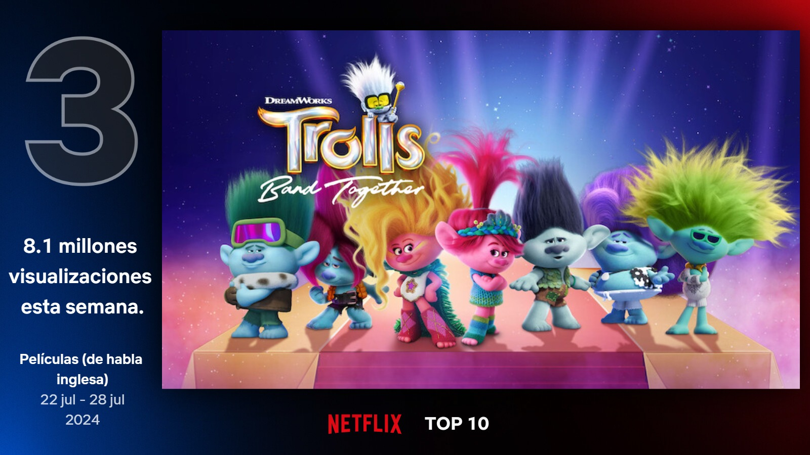
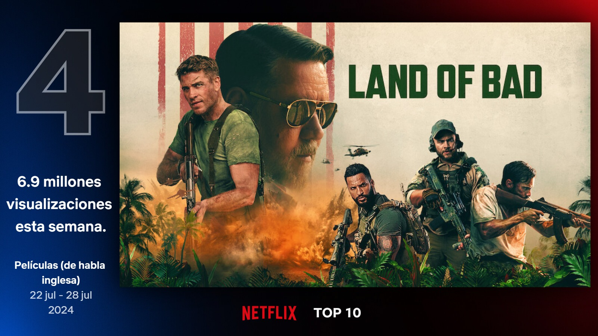
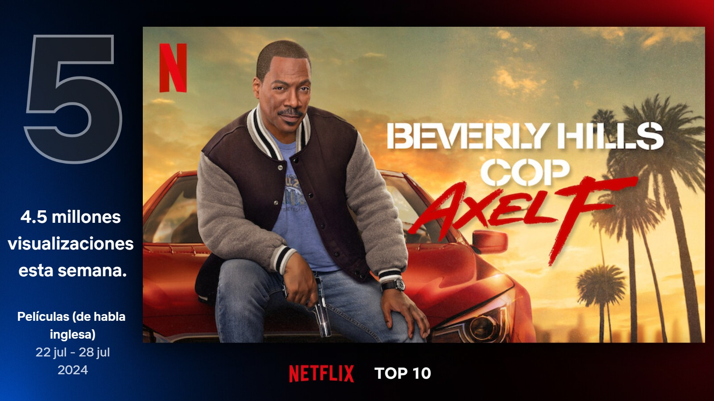
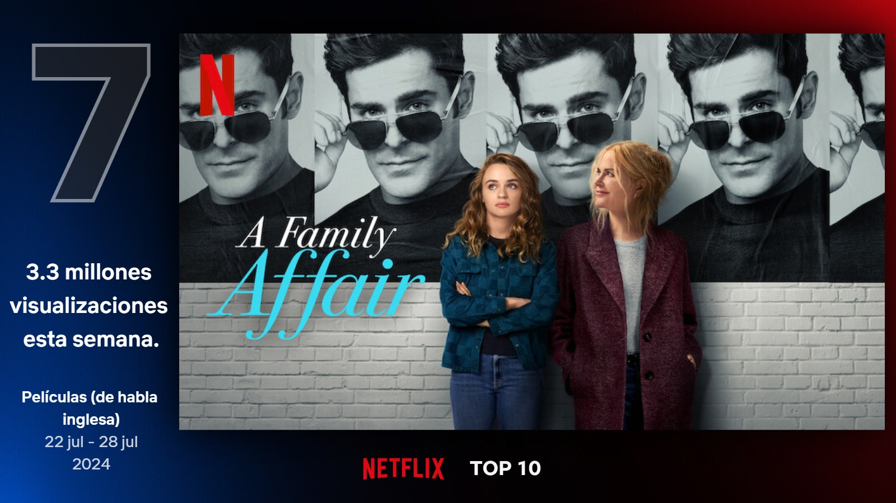
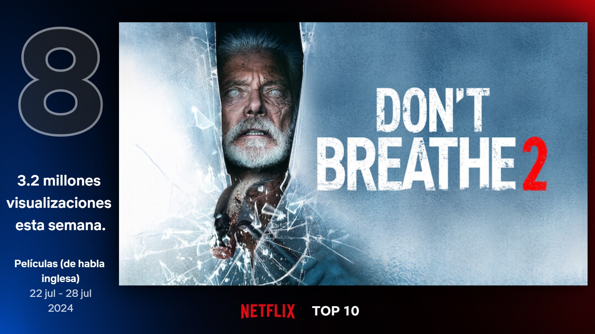
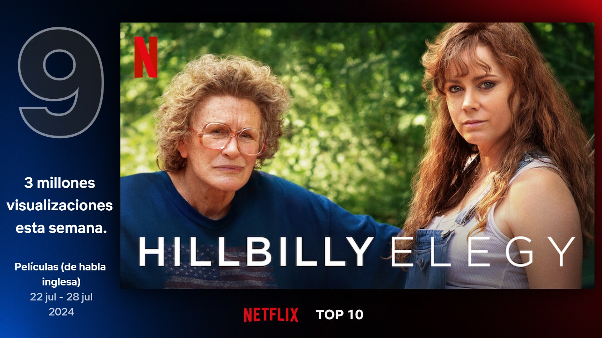

Al borde del abismo
Tras el fracaso de su álbum de regreso, una estrella del rock se retira a una casa en un acantilado de Chipre. Allí, descubre que su nueva vida se complica por las visitas y por un antiguo amor.
Ghostbusters: Apocalipsis fantasma
La familia Spengler regresa a la famosa estación de bomberos de la ciudad de Nueva York con los cazafantasmas originales. Cuando un antiguo artefacto desata una fuerza maligna, los cazafantasmas nuevos y antiguos deben unirse para proteger el mundo.
Trolls 3: Se armó la banda
Branch y Poppy emprenden un viaje para salvar a Floyd, el hermano de Branch, al que ha secuestrado una pareja de villanos estrellas del pop.
Land of Bad
Un equipo del Delta Force sufre una emboscada en territorio enemigo, pero un oficial novato se niega a abandonar a sus compañeros. Se inicia entonces una batalla infernal por la supervivencia en la que solo reciben la ayuda de un piloto de drones.
Un detective suelto en Hollywood: Axel F.
Cuando la vida de su hija se ve amenazada, el bromista detective Axel Foley se une a un nuevo socio y algunos viejos amigos para aumentar la presión sobre una conspiración.
Titanic
Una joven de la alta sociedad abandona a su arrogante pretendiente por un artista humilde en el trasatlántico que se hundió durante su viaje inaugural.
Un asunto familiar
Zara está harta de trabajar para Chris, una estrella de cine, así que dimite. Él va a buscarla a casa para pedirle que vuelva, pero Zara no está y le abre la puerta Brooke, la madre de ella. Entre ellos dos surge una atracción irresistible.
No respires 2
Un veterano ciego debe usar su entrenamiento militar para salvar a un joven huérfano de un grupo de matones que irrumpen en su casa..
Hillbilly, una elegía rural
J.D. está a punto de convertirse en abogado, pero un percance familiar lo obliga a retornar al pueblo empobrecido que siempre quiso olvidar. El viaje del joven le permitirá cerrar heridas y comprender mejor quién es él realmente.
Con todos menos contigo
Sydney Sweeney y Glenn Powell son Bea y Ben, dos solteros que tuvieron un malentendido tras una cita y ahora no se soportan. Cuando se reencuentran en una boda en Australia, hacen lo que haría cualquier adulto maduro: fingir que son pareja.